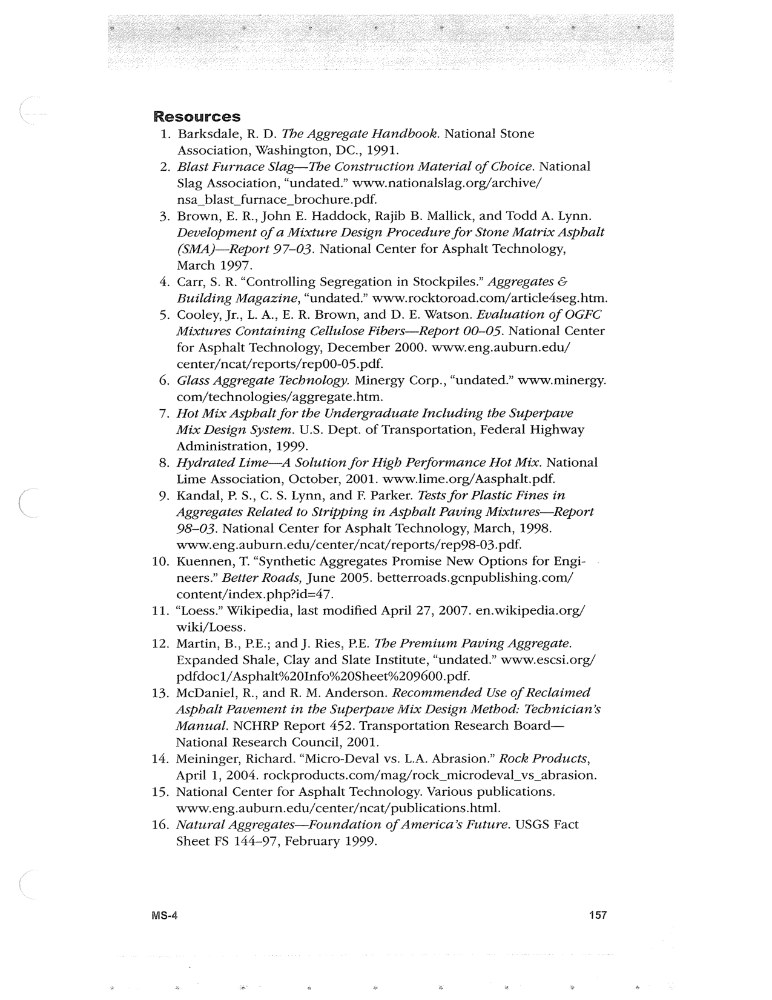

PDF page 191 · book page sequence 157


Searchable transcription
Unproofread OCR · 298 detected words; mean OCR confidence 93.66. Check technical values, symbols and table columns against the scan.
Resources
1.
10.
11.
12.
13.
14.
15.
16.
Barksdale, R. D. The Aggregate Handbook. National Stone Association, Washington, DC., 1991.
. Blast Furnace Slag—The Construction Material of Choice. National
Slag Association, “undated.” www.nationalslag.org/archive/ nsa_blast_furnace_brochure.pdf.
. Brown, E. R., John E. Haddock, Rajib B. Mallick, and Todd A. Lynn.
Development of a Mixture Design Procedure for Stone Matrix Asphalt (SMA)—Report 97-03. National Center for Asphalt Technology, March 1997.
. Carr, S. R. “Controlling Segregation in Stockpiles.” Aggregates &
Building Magazine, “undated.” www.rocktoroad.com/article4seg.htm.
. Cooley, Jr., L. A., E. R. Brown, and D. E. Watson. Evaluation of OGFC
Mixtures Containing Cellulose Fibers—Report 00-05. National Center for Asphalt Technology, December 2000. www.eng.auburn.edu/ center/ncat/reports/rep00-05.pdf.
. Glass Aggregate Technology. Minergy Corp., “undated.” www.minergy.
com/technologies/aggregate.htm.
. Hot Mix Asphalt for the Undergraduate Including the Superpave
Mix Design System. U.S. Dept. of Transportation, Federal Highway Administration, 1999.
. Hydrated Lime—A Solution for High Performance Hot Mix. National
Lime Association, October, 2001. www.lime.org/Aasphalt.pdf.
. Kandal, P. S., C. S. Lynn, and F. Parker. Tests for Plastic Fines in
Aggregates Related to Stripping in Asphalt Paving Mixtures—Report 98-03. National Center for Asphalt Technology, March, 1998. www.eng.auburn.edu/center/ncat/reports/rep98-03.pdf.
Kuennen, T. “Synthetic Aggregates Promise New Options for Engi- neers.” Better Roads, June 2005. betterroads.gcnpublishing.com/ content/index.php?id=47.
“Loess.” Wikipedia, last modified April 27, 2007. en.wikipedia.org/ wiki/Loess.
Martin, B., P.E.; and J. Ries, RE. The Premium Paving Aggregate. Expanded Shale, Clay and Slate Institute, “undated.” www.escsi.org/ pdfdoc1/Asphalt%20Info%20Sheet%209600. pdf.
McDaniel, R., and R. M. Anderson. Recommended Use of Reclaimed Asphalt Pavement in the Superpave Mix Design Method: Technician’s Manual. NCHRP Report 452. Transportation Research Board— National Research Council, 2001.
Meininger, Richard. “Micro-Deval vs. L.A. Abrasion.” Rock Products, April 1, 2004. rockproducts.com/mag/rock_microdeval_vs_abrasion. National Center for Asphalt Technology. Various publications. www.eng.auburn.edu/center/ncat/publications.html.
Natural Aggregates—Foundation of America’s Future. USGS Fact Sheet FS 144-97, February 1999.
MS-4 157